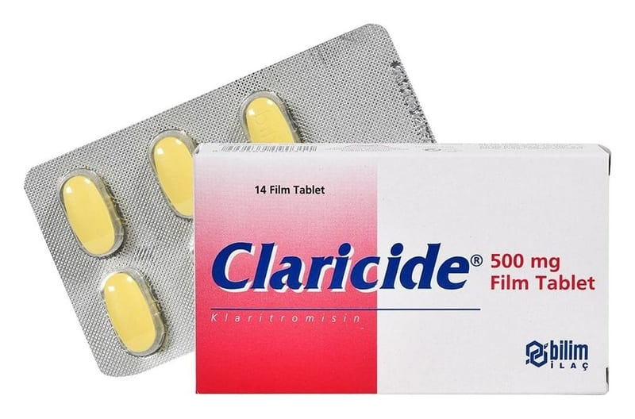

Claricide 500 mg Film Tablet, 14 Adet

Ne için kullanılır
KT · Bölüm 1CLARİCİDE film tabletler, sarı renkli, çift kenarlı, oval, bikonveks, bir yüzünde “bilim” yazısı olan film kaplı tabletlerdir. Bir kutuda 14 tablet bulunan ambalaj şeklinde satışa sunulmuştur.
Her bir CLARİCİDE film tablet, 500 mg klaritromisin içerir.
CLARİCİDE film tablet (klaritromisin) makrolid adı verilen bir gruba ait bir antibiyotiktir. Antibiyotikler enfeksiyonlara neden olan bakterilerin çoğalmasını durdurur.
CLARİCİDE film tablet yetişkinlerde ve 12 yaşından büyük çocuklarda çeşitli mikroorganizmaların neden olduğu şu enfeksiyon hastalıklarının tedavisinde kullanılmak içindir:
Sayfa 2
• Farenjit (yutak iltihabı), tonsillit (bademcik iltihabı), sinüzit (sinüs iltihabı) gibi üst solunum yolu enfeksiyonları, • Akut ve kronik bronşit, pnömoni (zatürre) gibi alt solunum yolu enfeksiyonları, • Duyarlı mikroorganizmaların neden olduğu komplike olmayan, çeşitli deri ve yumuşak doku enfeksiyonları.
CLARİCİDE film tablet ayrıca aşağıdaki tablolarda da kullanılmaktadır:
• Bazı AIDS (edinilmiş immün yetmezlik sendromu) hastalarındaki, bir mikobakteri türüne (mikobakterium avium kompleksi) bağlı enfeksiyondan korunma amacıyla, • On iki parmak bağı rsağı ülseri nüksünün azaltılması için, H. pylori adındaki bakterinin yok edilmesi (eradikasyonu) amacıyla.